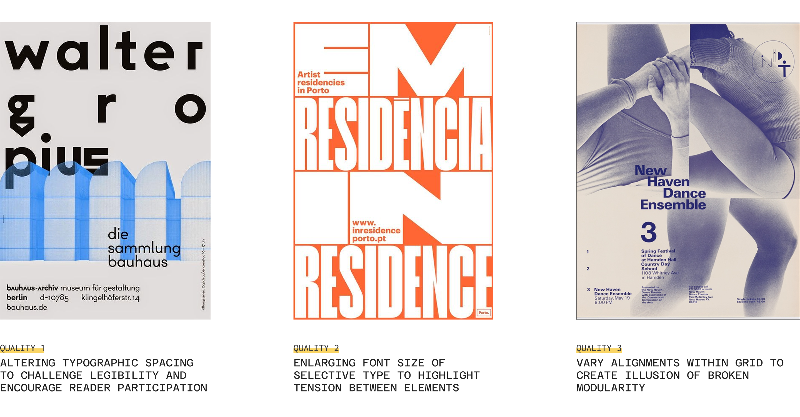
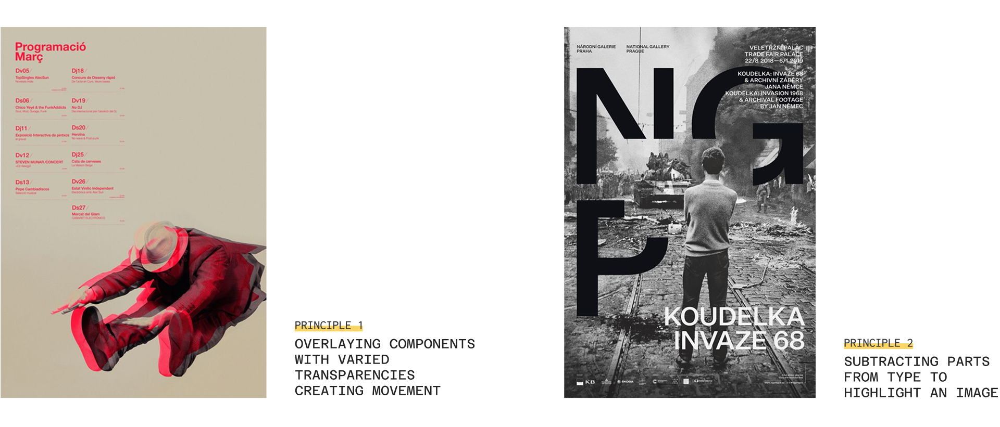
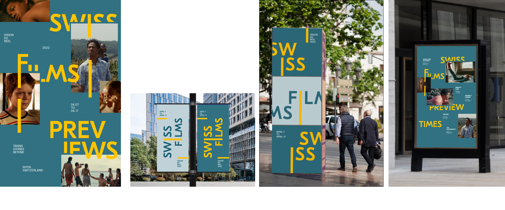
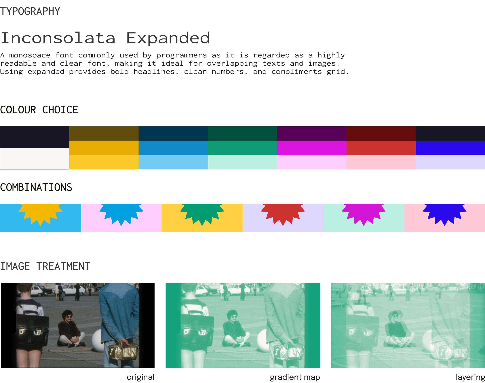
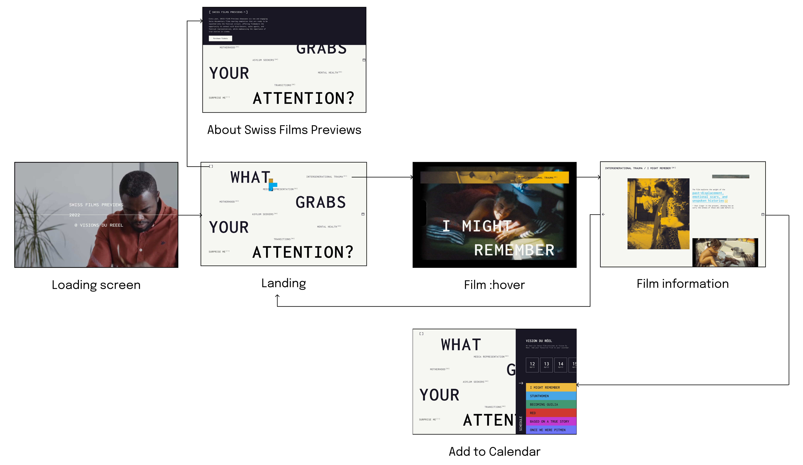

Swiss Films Previews
Visual Identity, Branding, Interaction Design, Microsite
A microsite, along with printed graphic assets, for the Swiss Films Previews pre-event, aiming to promote novice filmmakers and honor documentary films.
×

My Role
- Visual Designer
- UI Designer
- Interaction Designer
Team
- Kathy Datsky
- Kezia Taufiq
- Haruhi Hosaka
- Monica de Mesa
Tools
- Figma
Duration
- 5 weeks - Fall 2024
Overview
Over a 5-week project, our team delved into the works of designers like Dan Friedman and Ellen Lupton, drawing inspiration for graphical experiments that solidified our design principles. These explorations culminated in the creation of dynamic posters, assets, and ultimately a microsites for our simulated client, the Swiss Films Previews.
A Celebration to Swiss Films
Swiss Films promotes Swiss cinema by supporting filmmakers and annually hosting previews at festivals in Nyon, Locarno, and Winterthur. These events provide a platform for Swiss productions to showcase works in progress to industry professionals.
As these films are produced by junior filmmakers making their way into the industry, our graphic assets and microsite will focus on the pre-event, specifically the promotion of Swiss Films Previews at Visions du Réel, Locarno. By focusing on the real-world issues these films explore, we aim to emphasize their significance and why they matter.
An Analysis of Our Precedents
Through researching and learning about Dan Friedman's graphic design methodologies and philosophies, we generated insights to shape our client's project. The techniques we draw from Friedman's work help us understand how to create a more dynamic hierarchy, guiding the viewer's eye through the typography and drawing attention to key areas.
We also learned from Ellen Lupton's principles of design and applied two of them, including Transparency and Closure. Since our client is in cinematography, I was inspired by hand-drawn animation and suggested that the team focus on overlay transparency to create movement.
Exploring Art Directions
Iterate, iterate, and iterate
The team engaged in a deeply collaborative process, experimenting with type, color, and imagery across hundreds of iterations. Drawing inspiration from each other's ideas, these cumulative small decisions resulted in the development of three distinct art directions, each with their oown unique set of graphic assets.
I was responsible for the first direction and also for creating assets for the other two directions to further assist my teammates, considering our time constraints for this project.
Direction 1

Direction 2

Direction 3
Moving to Digital
Microsite goal: Inspire & Connect
After experimenting with all three directions, we chose the third—and most expressive—direction for the microsite, recognizing its potential for an explorative experience.
The goal of this microsite is to inspire ticket holders who are unsure of which film to watch by presenting relevant information and themes, emphasizing each film's significance and impact. It also aims to build an emotional connection with the audience through clear introductions and engaging narratives for each featured documentary.
Adapting graphic elements to microsite
Keeping the essential design qualities of the third graphic art direction, we made appropriate adjustments to accommodate to the diverse content across the microsite pages and allow for smooth digital interactions. However, adjustments were made such as adopting darker colours from the palette to create higher contrast for web elements. Additionally, we shifted from using geometric shapes to relying on varied type alignments within the grid, which proved to be more effective and consistent for screen-based interaction.
User Flow
We continue to brainstorm what movies and related content would work best and created a site map to help organize the information architecture of our microsite. I was in charge for the flow from the landing page to the flow of the entire film information page.
Final Microsite
Micro (but key) interactions
Inspired by a "Blind Book Dates"...
the landing page acts as an opportunity to showcase the topics the 6 documentaries in the Previews touch on, allowing viewers to dig deep into films based on their emotional connection, and not “judge a book by its cover”.
Hover for extra context about the film's history
we've added a hover-triggered pop-up on selective words. This allows information to appear without cluttering the page or requiring additional scrolling, encouraging interaction instead.
Colour treament as affordance
Interactive images receive colour treatment to hint its interaction. When clicking on an image stack, images are spread across the page like a scattered photo album, reflecting the documentary theme of the microsite.
Building on the spirit of exploring stories...
the "Add to Calendar" feature encourages visitors to buy tickets or save the date. Fixed to the right side of every screen, it acts as a constant prompt for users to easily add films to their calendar.
Reflection
Looking back, this was one of the most intensive projects I worked on, but it also taught me that I could push my potential further and develop my design and research skills by studying the principles of design precedents, analyzing their techniques, and implementing them into my own process. The most memorable moment in this project for me was likely the rapid iteration process, during which we designed 100 posters within a week to explore which visual direction would translate best to digital.
Beyond the design process, this project deepened my understanding of how visual storytelling shapes user perception. The microsite was more than just an information hub, it was a carefully curated experience that connected audiences with each film's themes and significance. Each interaction, even a micro one, can have an impact on the experience of the users.